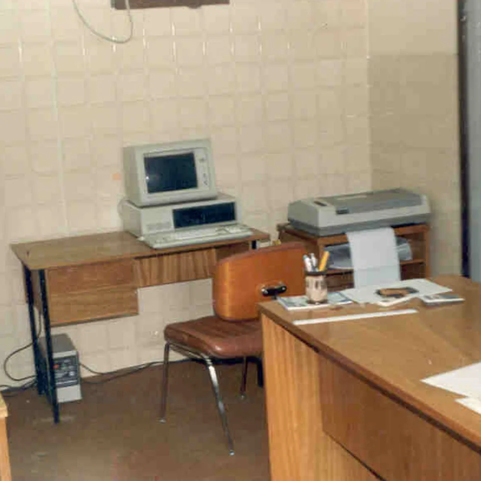
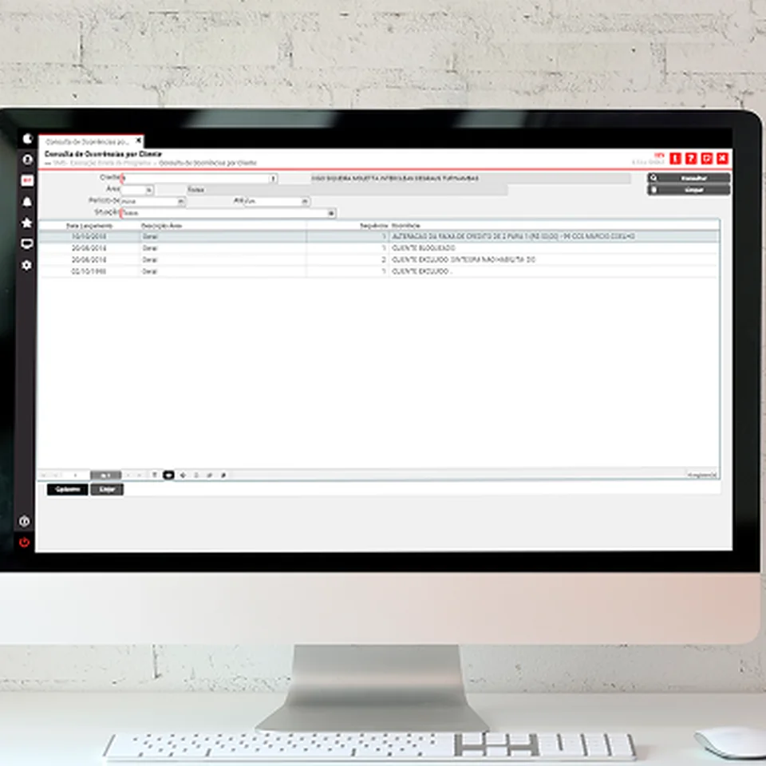

A história da Consistem
A Consistem nasceu em Jaraguá do Sul, em uma sala na antiga casa de seus fundadores, Laureci e Ivonete Sabel.
O que começou em uma estrutura pequena cresceu acompanhando a própria transformação da tecnologia empresarial. Sistemas, processos, equipes e indústrias mudaram profundamente desde então, e cada etapa exigiu novas competências para continuar atendendo empresas com operações cada vez mais integradas e complexas.

1986–1994
Os primeiros anos
Em 1986, a Consistem iniciou suas atividades em uma sala na casa dos fundadores. Dois anos depois, a empresa já se mudava para a primeira sede própria.
Em 1994, uma nova ampliação acompanhou o crescimento da operação. Os primeiros anos estabeleceram a base de uma empresa que passaria a desenvolver tecnologia acompanhando de perto as necessidades de seus clientes.

1986
Fundação em Jaraguá do Sul

1988
Primeira sede própria

1994
Nova ampliação
2000–2010
Produtos e processos ganham mais estrutura
O ano 2000 foi marcado pela apresentação de um ERP totalmente reformulado para os clientes.
Em 2007, foi liberada a primeira versão do sistema com grid, facilitando a visualização de dados. A sede passou por nova ampliação. Dois anos depois, a Consistem reestruturou os processos de desenvolvimento e formalizou práticas de ciclo de vida, gestão de projetos, testes e documentação.

2000
ERP totalmente reformulado

2007
Primeira versão com grid

2009
Processos de desenvolvimento formalizados
2010–2020
Foco no cliente e no mercado
Em 2012, a Consistem participou pela primeira vez da Febratex. A presença na feira passou a representar mais do que exposição de produto: criou um espaço recorrente para relacionamento com clientes, aproximação com novas empresas e escuta direta de profissionais dos setores têxtil e de confecção.
No ano de 2019, o Consistem ERP recebeu mais uma reformulação de interface, trazendo um visual mais contemporâneo e melhorias na usabilidade.
Nesta década, a empresa reorganizou os processos de vendas, suporte e pós-venda e instituiu a função de gerente de relacionamento.

2012
Primeira participação na Febratex

2019
Reformulação de interface do ERP
2021–2025
Uma nova etapa de expansão
Em 2022, a Consistem entregou um bloco administrativo e ampliou a estrutura da fábrica de software e serviços.
No mesmo ano foi realizada a primeira edição do Consistem Talks, iniciativa voltada a conversas sobre tecnologia, gestão e negócios. Em 2023, o Consistem Workshop ampliou a agenda de capacitação com clientes.
Em 2025, começaram as obras de um novo prédio para a fábrica de software e serviços, com 1,2 mil m² e capacidade prevista para mais 150 colaboradores.

2022
Bloco administrativo e primeiro Consistem Talks

2023
Consistem Workshop

2025
Obras do novo prédio da fábrica de software e serviços
Em 2026, a Consistem chega aos 40 anos enquanto atualiza também a forma como se posiciona e amplia seu portfólio tecnológico.
A nova identidade reforça a confiança que orienta a marca. Ao mesmo tempo, a Consistem Clara IA amplia a presença da inteligência artificial no ecossistema de gestão, conectando dados, agentes, automação e governança.
Esses movimentos fazem parte de uma mesma trajetória: utilizar o conhecimento acumulado para responder a novas necessidades sem perder de vista a segurança e a continuidade das operações.

A história continua com relações sólidas
As empresas que chegam ao ecossistema Consistem também ajudam a ampliar o conhecimento sobre a indústria e seus novos desafios.
A Appel Home conheceu a Consistem na Febratex 2024, enquanto avaliava mais de dez sistemas para tomar uma decisão. Hoje, a relação iniciada naquele processo faz parte da gestão da Appel Home e voltou à Febratex em forma de depoimento.